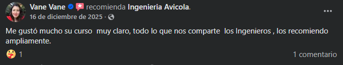

+52 236 113 8979
+52 236 113 8979 ingenieriaavicol@gmail.com
ingenieriaavicol@gmail.com Cobertura presencial: Puebla, Veracruz, Oaxaca, Hidalgo, Morelos y Tabasco
Cobertura presencial: Puebla, Veracruz, Oaxaca, Hidalgo, Morelos y Tabasco
Capacitación • Consultoría • Proyectos Avícolas
Más de 1000 cursos impartidos y proyectos avícolas profesionales a nivel nacional
En Ingeniería Avícola ofrecemos capacitación técnica especializada, cursos en línea y presenciales, asesoría profesional y desarrollo de proyectos avícolas para productores, emprendedores y empresas del sector.
+1000
Cursos impartidos
Nacional
Cobertura en capacitación y proyectos
Online + Presencial
Modalidades adaptadas a cada necesidad
Profesional
Desarrollo de proyectos avícolas
Experiencia comprobada
Ingeniería Avícola
Capacitación especializada, consultoría técnica y proyectos avícolas con enfoque profesional en México.
Servicios especializados
Soluciones para el desarrollo del sector avícola
Una propuesta más fuerte, profesional y enfocada en experiencia real, capacitación y crecimiento productivo.
Capacitación avícola
Cursos técnicos especializados para producción, manejo, administración y bioseguridad avícola.
Cursos en línea y presenciales
Programas en vivo y formación práctica con cobertura en distintos estados de México.

Asesoría técnica profesional
Orientación especializada para productores, emprendedores y proyectos en desarrollo.
Proyectos avícolas
Desarrollo de proyectos avícolas profesionales
Apoyamos a productores y emprendedores en la planeación y desarrollo de proyectos avícolas con enfoque técnico, productivo y profesional.
- Planeación de unidades de producción
- Proyectos de gallinas de postura
- Sistemas avícolas de traspatio
- Manejo técnico y acompañamiento
- Buenas prácticas para mejorar productividad
Cobertura nacional
De la capacitación al proyecto
No solo impartimos cursos. También ayudamos a convertir el conocimiento en proyectos avícolas mejor estructurados y con visión productiva.
+1000Cursos impartidos
6 estadosPresencia presencial
Cursos destacados
Capacitación especializada en producción y manejo avícola

En línea
Manejo de gallinas de postura libre de jaula
Bienestar animal, postura y producción en sistemas alternativos.
Más información
En línea
Administración avícola y crianza técnica
Organización productiva y fundamentos para operaciones avícolas.
Más información
En línea
Técnicas de sexaje en pollitas
Métodos para identificación técnica en etapas tempranas.
Más información
En línea
Bioseguridad avícola y control de enfermedades
Prevención, manejo sanitario y protocolos de control.
Más información
Presencial
Manejo de gallinas de postura de traspatio
Capacitación presencial para proyectos familiares o de pequeña escala.
Más información
En línea
Producción y manejo técnico de gallinas de postura
Curso enfocado en producción intensiva y manejo técnico de postura.
Más información
Fortalezas
¿Por qué elegir Ingeniería Avícola?
Experiencia comprobada
Más de 1000 cursos impartidos y una presencia creciente en formación técnica avícola.
Enfoque profesional
Capacitación, asesoría y desarrollo de proyectos para fortalecer el sector avícola.
Cobertura nacional
Atención en línea para todo México y cursos presenciales en varios estados del país.
Cobertura
Capacitación presencial en diferentes estados
Puebla, Veracruz, Oaxaca, Hidalgo, Morelos y Tabasco, además de atención en línea a nivel nacional.
Puebla
Veracruz
Oaxaca
Hidalgo
Morelos
Tabasco
Testimonios
Opiniones y confianza
“Capacitaciones con enfoque práctico, información clara y temas aplicables al trabajo real dentro del sector avícola.”
Participantes y productores“La combinación entre experiencia, claridad técnica y atención directa genera mucha confianza para cursos y proyectos.”
Imagen profesional
Contáctanos
Fortalece tus conocimientos y desarrolla tu proyecto avícola
Solicita informes y recibe atención directa para cursos, fechas, asesoría técnica y proyectos avícolas profesionales.